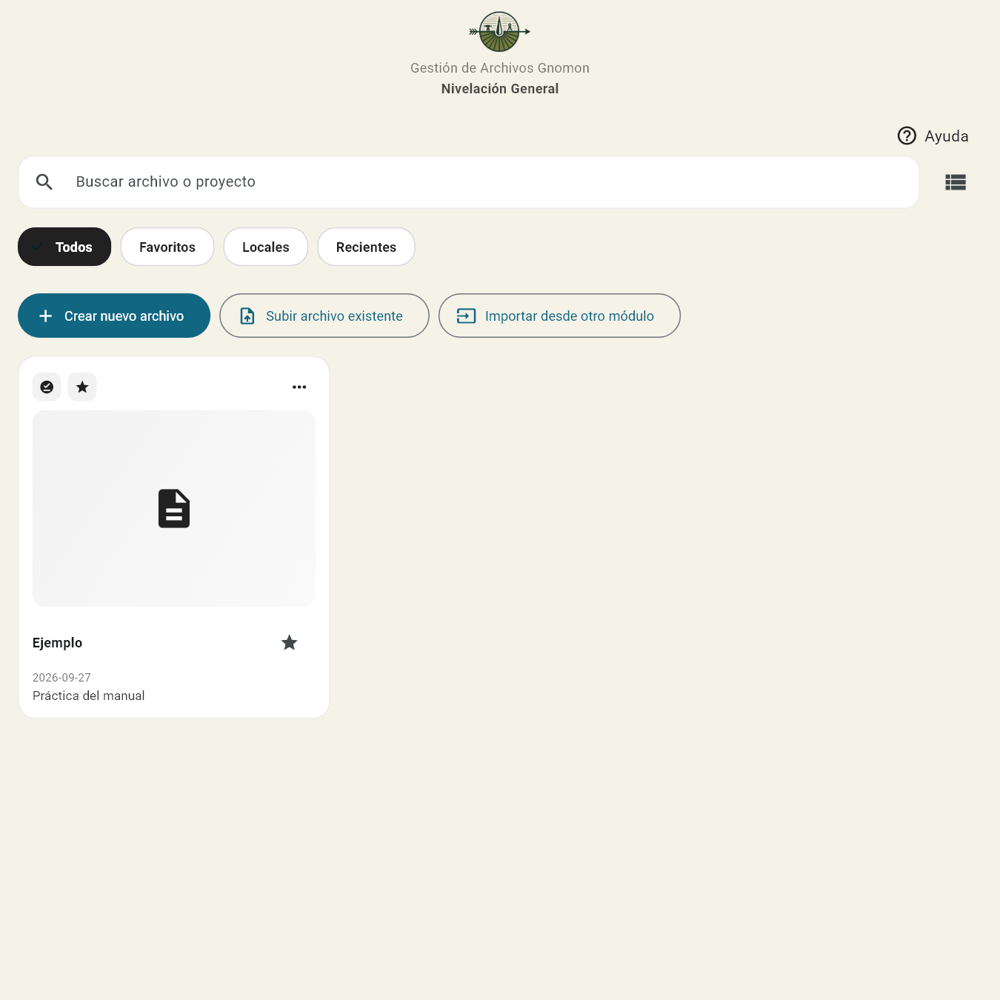
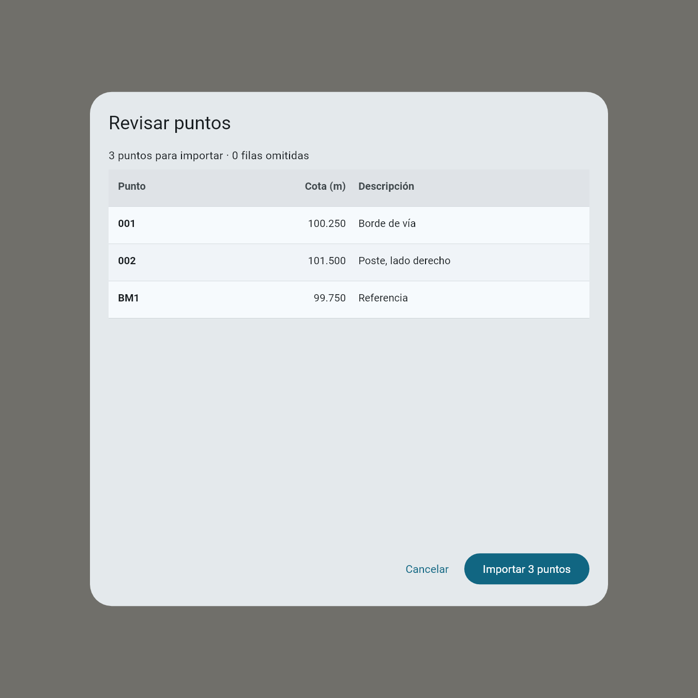
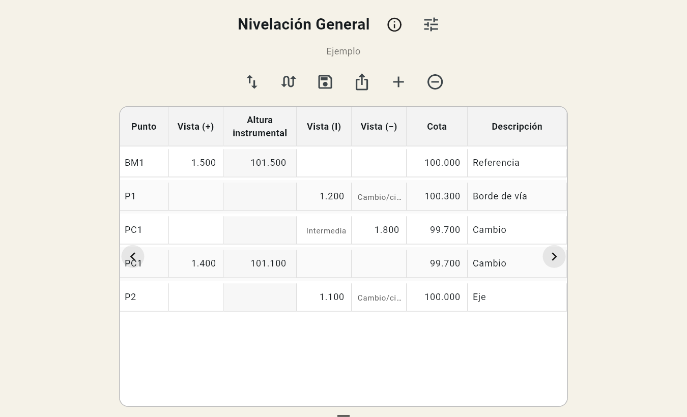
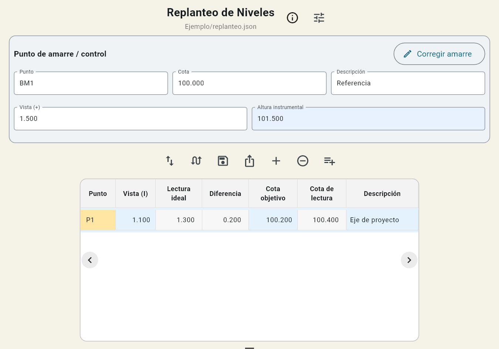
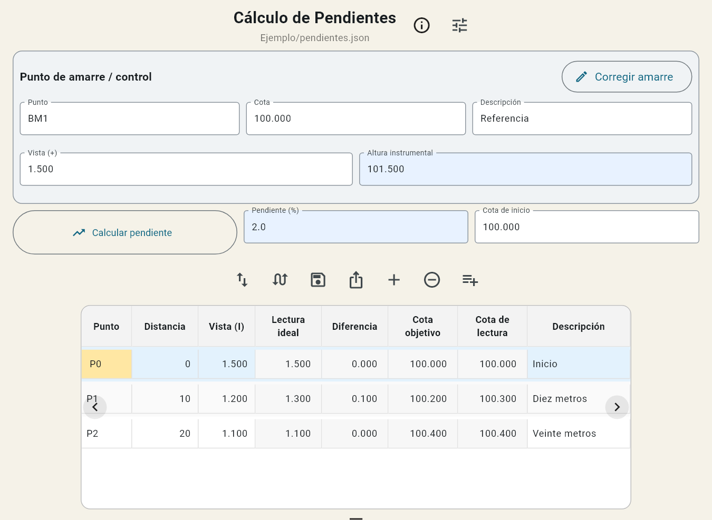
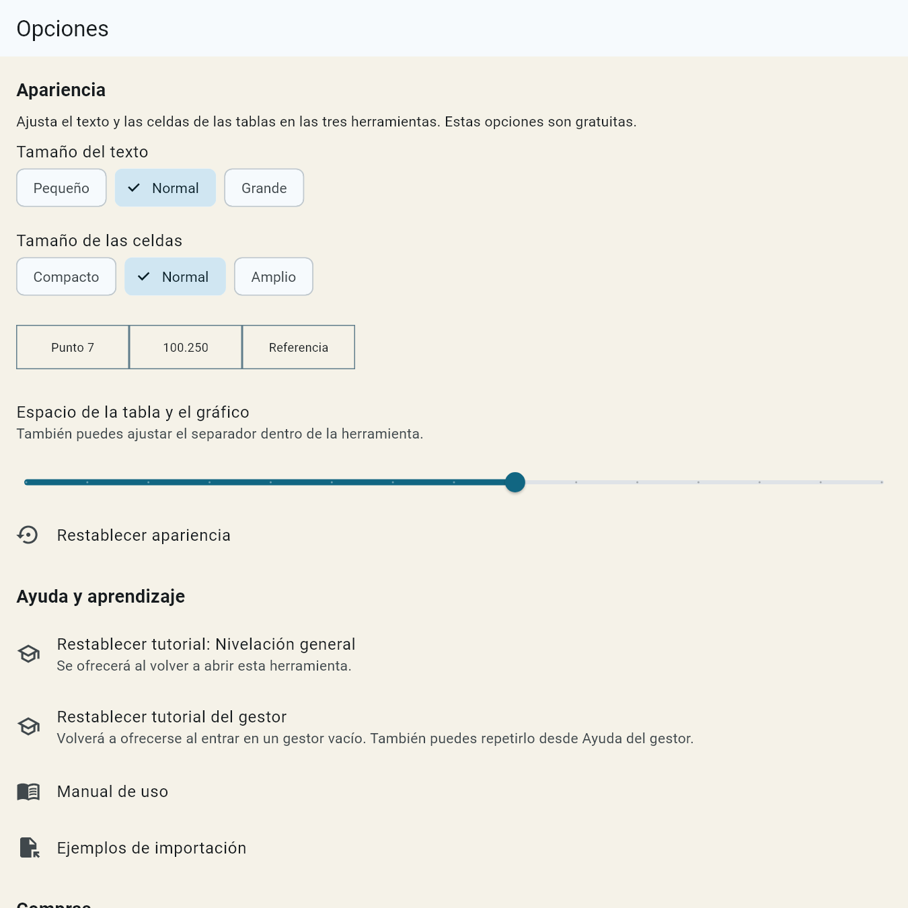
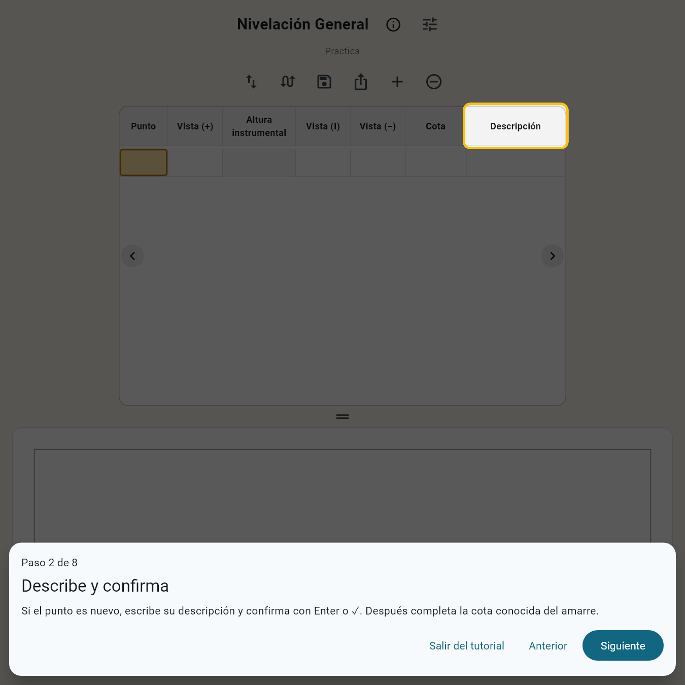

MANUAL DE USUARIO · EDICIÓN 1.3
De la primera lectura
al trabajo guardado.
Aprende a registrar, comprobar y compartir tus trabajos con Nivelación Topográfica — Gnomon.
Escribe. Confirma. Continúa.
Pulsa Enter o ✓ al terminar cada dato. La app te guía al siguiente paso.
Guía preparada para la próxima actualización 1.3.0. Consulta qué versión describe.
Empieza aquíVideo introductorio
Tu primera nivelación con Gnomon
Video introductorio · Próximamente
Aquí podrás ver el recorrido completo. Mientras tanto, sigue la guía paso a paso de abajo.
Elige la herramienta adecuada
Nivelación general
Conoce la cota de nuevos puntos y continúa al cambiar de estación.
02Replanteo de niveles
Comprueba cuánto debes subir o bajar un punto hasta alcanzar una cota objetivo.
03Cálculo de pendientes
Replantea una rasante según el porcentaje y la distancia desde el inicio.
Comienza con un trabajo de práctica. Los ejemplos usan metros para cotas, lecturas y distancias; mantén la misma unidad durante todo el trabajo.
La clave: escribe y confirma
Es el botón del teclado para terminar la entrada; su aspecto depende del celular. Confirma el dato para que la app revise lo que falta y continúe el recorrido.
| Cuando confirmas… | La app… |
|---|---|
| Identificador, descripción o cota | Te guía al siguiente dato necesario. Si el punto es conocido, aprovecha los datos del catálogo. |
| Una lectura válida en nivelación general | Revisa los datos y continúa al siguiente punto o al punto de cambio. |
| Una lectura en replanteo de niveles o pendientes | Cierra el teclado y conserva el mismo punto para revisar el resultado y volver a medir. Pulsa + cuando quieras otro punto. |
La celda resaltada orienta el siguiente paso. Si falta un dato, lee la alerta y completa la casilla indicada. Las celdas calculadas automáticamente no admiten escritura; al tocarlas aparece una explicación.
Confirmar no sustituye a Guardar. Usa el botón con el disquete para conservar el trabajo antes de salir o compartirlo.
Crea y organiza tus trabajos
- Abre la herramienta y entra en su gestor.
- Pulsa Crear nuevo archivo. Escribe un nombre reconocible y, si lo necesitas, una descripción.
- Si tienes un catálogo, adjunta un TXT, CSV o Excel desde el formulario de creación. Es opcional.
- Revisa los puntos del adjunto y confirma la importación. Luego completa la creación del proyecto.
- Toca el trabajo en el listado para abrirlo.

No confundas estas entradas
- Subir archivo existente: abre un proyecto JSON compartido desde el gestor del mismo módulo.
- Subir archivo dentro de Crear: adjunta una lista de puntos TXT, CSV o XLSX.
- Importar desde otro módulo: reutiliza un catálogo de puntos; no traslada todas las observaciones de la otra herramienta.
Busca por nombre o descripción, usa los filtros Todos, Favoritos, Locales y Recientes y alterna entre tarjetas y lista. La estrella marca un favorito. El menú de cada trabajo permite renombrarlo, duplicarlo, compartirlo o eliminarlo.
Los trabajos se guardan en el dispositivo. Antes de borrar uno o cambiar de teléfono, comparte una copia JSON y consérvala fuera de la app.
Importa tus puntos: solo tres columnas
Prepara estas columnas, en este orden. El encabezado es opcional.
| Punto | Cota | Descripción |
|---|---|---|
| 001 | 100.250 | Borde de vía |
| 002 | 101.500 | Poste, lado derecho |
| BM1 | 99.750 | Referencia |
Son los mismos ejemplos de Opciones → Ejemplos de importación. Descarga uno, cambia los datos y úsalo como plantilla.
Antes de cargar el archivo
- En Excel usa .xlsx, sin contraseña y con valores, no fórmulas. Convierte el formato antiguo .xls a .xlsx.
- Escribe los identificadores como texto para conservar ceros iniciales: 001 no es lo mismo que 1.
- Usa solo las tres columnas de datos. No incluyas coordenadas Este/Norte ni otras columnas de trabajo.
- En CSV con coma decimal, usa punto y coma como separador:
001;100,25;Borde de vía. - Usa un archivo de hasta 5 MB y no más de 10 000 filas. Evita repetir identificadores.

Si el Excel tiene varias hojas con datos, selecciona la adecuada. La vista previa indica cuántos puntos se aceptan y qué filas se omiten. Los puntos que ya existen en el catálogo no se reemplazan desde esta importación. Revisa los avisos antes de pulsar Importar; puedes cancelar y corregir el archivo.
El archivo recibido por WhatsApp cambió de nombre o extensión
Descarga el documento al dispositivo y selecciónalo desde la importación. La app revisa el contenido, no solo la extensión. Si sigue siendo texto de puntos o un XLSX válido, puede reconocerlo aunque se haya renombrado. Cambiar la extensión de una foto, PDF o archivo dañado no lo convierte en catálogo.
Si no abre, vuelve a pedirlo como documento original o guárdalo como TXT, CSV o XLSX. Compara las tres columnas con los ejemplos de arriba.
Nivelación general, paso a paso
Parte de una cota conocida para calcular nuevas cotas. Registra una sola lectura por fila: vista (+), vista (I) o vista (−).
1. Realiza el amarre inicial
- Escribe el punto de referencia, por ejemplo BM1, y confirma.
- Si está en el catálogo, la app completa sus datos. Si es nuevo, escribe la descripción y la cota conocida, confirmando cada dato.
- Introduce la Vista (+) y confirma. El primer punto debe comenzar con esta lectura; una intermedia o una vista (−) no sirven para iniciar el amarre.
Altura instrumental = cota conocida + vista (+)
2. Registra los puntos siguientes
Introduce el nuevo punto y su descripción, confirmando con Enter o ✓. Cuando aparezca la elección de lectura:
- Intermedia — vista (I): calcula un punto y continúa desde la misma estación.
- Cambio/cierre — vista (−): termina las observaciones desde esa estación.
Selecciona una, escribe la lectura y confirma. Puedes cambiar de tipo antes de registrarla. Si ya escribiste otra lectura en esa fila, bórrala antes de cambiar de tipo; para una observación adicional crea una fila nueva.
Cota del punto = altura instrumental − lectura
3. Continúa después de un cambio
Al confirmar la vista (−), la app prepara otra fila con el mismo punto de cambio y su cota. Traslada el instrumento, toma la nueva vista (+) sobre ese punto y confírmala para obtener la nueva altura instrumental. Son dos filas distintas, una para cada estación.
Si el trabajo terminó, no tomes una vista (+) ficticia para completar la fila preparada. Guarda el trabajo. El cierre de una estación no equivale a comprobar el cierre contra un BM conocido ni a una compensación automática.

Ejemplo para practicar
| Punto | Lectura | Valor (m) | Resultado (m) |
|---|---|---|---|
| BM1 | Vista (+) | 1.500 | Cota inicial 100.000 → altura instrumental 101.500 |
| P1 | Vista (I) | 1.200 | Cota 100.300 |
| PC1 | Vista (−) | 1.800 | Cota 99.700; termina la estación |
| PC1 | Vista (+), nueva estación | 1.400 | Altura instrumental 101.100 |
| P2 | Vista (I) | 1.100 | Cota 100.000 |
Comprueba tus resultados y pulsa Guardar. El perfil permite visualizar la variación de cotas; no representa por sí solo las distancias reales del terreno.
Replanteo de niveles
Lleva un punto a una cota objetivo. Primero completa el amarre; sin vista (+) no existe una altura instrumental válida para calcular diferencias.
- En Punto de amarre / control, escribe el punto conocido y confirma. Si no está en el catálogo, completa descripción y cota.
- Introduce la Vista (+) y confirma. La Altura instrumental se calcula sola y el amarre queda fijado.
- En la tabla, escribe el punto que vas a replantear. Si es conocido, se completan descripción y cota objetivo. Si es nuevo, introdúcelas y confirma cada dato.
- Introduce la Vista (I) y confirma. El teclado se cierra para ver el resultado; el punto sigue siendo el mismo.
- Repite la lectura cuando sea necesario. Para pasar a otro punto, pulsa + o selecciónalo desde el catálogo de la herramienta.

Cómo interpretar el resultado
Lectura ideal = altura instrumental − cota objetivo
Cota de lectura = altura instrumental − vista (I)
Diferencia = cota de lectura − cota objetivo
| Diferencia | Interpretación |
|---|---|
| Positiva: +0.200 m | El punto está alto: bajar 0.200 m. |
| Negativa: −0.200 m | El punto está bajo: subir 0.200 m. |
| Cero | La cota de lectura coincide con el objetivo según el cálculo. Comprueba también la precisión y tolerancia de tu trabajo. |
En el ejemplo: BM 100.000 m + vista (+) 1.500 m = altura instrumental 101.500 m. Con objetivo 100.200 m, la lectura ideal es 1.300 m. Una lectura de 1.500 m daría cota 100.000 m y diferencia −0.200 m: habría que subir.
Corregir amarre permite editar la referencia, pero recalcula los resultados asociados. Para trabajar desde otra estación sin modificar las observaciones anteriores, conserva el proyecto y abre uno nuevo.
Cálculo y replanteo de pendientes
El amarre establece la altura instrumental. La pendiente y la cota de inicio establecen la rasante que quieres replantear. La cota de inicio de la pendiente no tiene que ser la cota del BM.
- Completa el amarre: punto, descripción, cota conocida y vista (+). Confirma cada dato.
- Pulsa Calcular pendiente: puedes obtenerla a partir de puntos conocidos, a partir de altura y distancia o introducir el porcentaje manualmente.
- Revisa el signo del porcentaje y completa la Cota de inicio. Confirma antes de continuar.
- En la tabla introduce el punto, su descripción y la Distancia horizontal acumulada desde el origen de la pendiente.
- Introduce la Vista (I) y confirma. Revisa diferencia y gráfico; puedes volver a medir el mismo punto. Pulsa + cuando quieras otro.
Para puntos a 0, 10 y 20 m del origen escribe 0, 10 y 20, no 0, 10 y 10. Cero representa el origen; no se admiten distancias negativas en la tabla.

Pendiente (%) = (cota final − cota inicial) ÷ distancia horizontal × 100
Cota objetivo = cota de inicio + pendiente (%) ÷ 100 × distancia
La distancia usada para calcular el porcentaje debe ser mayor que cero. Una pendiente positiva sube en el sentido de las distancias crecientes; una negativa baja.
| Distancia (m) | Cota con +2 % (m) | Cota con −2 % (m) |
|---|---|---|
| 0 | 100.000 | 100.000 |
| 10 | 100.200 | 99.800 |
| 20 | 100.400 | 99.600 |
La cota objetivo se calcula con la rasante; no se toma de la cota del catálogo. La diferencia se interpreta igual que en niveles: positiva, bajar; negativa, subir. Si cambias amarre, pendiente o cota de inicio, revisa los resultados recalculados.
Guarda, exporta y comparte
| Acción | Qué obtienes | Cuándo usarla |
|---|---|---|
| Guardar | El trabajo actualizado en el dispositivo. | Antes de salir o conservar una medición. |
| Exportar a Excel / Compartir | Una tabla de resultados .xlsx. | Para entregar o trabajar resultados en una hoja de cálculo. |
| Compartir desde el gestor | Un proyecto .json con la información del trabajo. | Para conservar una copia o continuar en otro dispositivo con la misma herramienta. |
- Confirma el último dato y pulsa Guardar.
- Para entregar resultados, pulsa Exportar y elige una aplicación de destino en Android.
- Para una copia del trabajo, vuelve al gestor, abre su menú y elige Compartir. Guarda el JSON donde puedas recuperarlo.
- Para restaurarlo, abre el gestor del mismo módulo y pulsa Subir archivo existente.
En esta edición los archivos usan el nombre del proyecto: Lote norte.xlsx o Lote norte.json, sin números añadidos. Si lo renombraste en el gestor, se usa ese nombre. Los caracteres incompatibles con nombres de archivo se sustituyen.
El Excel de resultados contiene las columnas de la herramienta: no es necesariamente un catálogo de tres columnas. Para reutilizarlo como lista de puntos, prepara una hoja con Punto, Cota y Descripción. Para continuar el trabajo completo, utiliza el JSON.
Ajusta texto, celdas y espacio
Abre Opciones con el botón de ajustes. La apariencia se aplica a las tres herramientas.
- Tamaño del texto: pequeño, normal o grande.
- Tamaño de las celdas: compacto, normal o amplio. También afecta a los campos del amarre y de cálculo de pendiente.
- Espacio de tabla y gráfico: ajusta el separador dentro de la herramienta o su control en Opciones. Cada módulo recuerda su reparto.
- Restablecer apariencia: vuelve a la presentación predeterminada.
Desplaza la tabla horizontalmente para ver sus columnas. Los botones de intercambio permiten cambiar la posición de tabla y gráfico o invertir la presentación de las filas. No sustituyen la confirmación del teclado.

En este menú también están el manual, los ejemplos de importación, los tutoriales, las ayudas del proyecto, las opciones PRO, la restauración de compras y la política de privacidad. La opción de privacidad de anuncios aparece cuando corresponde.
Tutoriales y avisos que puedes repetir
El gestor y las tres herramientas tienen guías diferentes. Muestran los controles reales sin crear mediciones ni consumir usos gratuitos.
- Gestor: el aviso automático se ofrece si está vacío y todavía no se ha respondido. Aceptarlo o elegir que ya sabes usarlo evita que insista.
- Cada herramienta: pregunta la primera vez que se abre. Ver nivelación general no marca como vistos los otros tutoriales.
- Para repetir: abre Ayuda en el gestor o en la herramienta y pulsa Repetir tutorial.
- Para restablecer el aviso: usa Opciones. Cada herramienta tiene su propio restablecimiento; en las opciones generales puedes restablecerlas por separado. Se ofrecerá al volver a abrirla.

Las alertas de ayuda del trabajo son independientes. No mostrar de nuevo oculta esa explicación para ese proyecto; no elimina las validaciones. Recupera las explicaciones con Reactivar las ayudas de este proyecto. En un proyecto nuevo vuelven a estar disponibles.
Prueba las herramientas y activa PRO
La edición gratuita permite probar el flujo antes de comprar. El límite base diario de esta versión es de 7 puntos en nivelación general y 4 en cada herramienta de replanteo. La app indica las opciones disponibles al alcanzar un tope.
Las funciones de importación y exportación que muestran prueba gratuita permiten un primer uso por función y módulo. Cancelar o encontrar un error no debería completar esa prueba. Después se ofrecen las opciones aplicables, como un anuncio recompensado o PRO. Los anuncios dependen de su disponibilidad.
PRO elimina los topes diarios de puntos, permite crear proyectos e importar y exportar sin esos límites, y trabajar sin anuncios. Revisa el precio que muestra Google Play antes de confirmar la compra.
Ya compré y no aparece PRO
- Comprueba que usas la app de Google Play y la misma cuenta con la que compraste.
- Con conexión a Internet, abre Opciones → Restaurar compras PRO.
- Si sigue sin reconocerse, contacta con soporte e indica versión de la app y qué ocurre. No publiques contraseñas ni datos de pago.
Gnomon Pruebas, instalada directamente para pruebas, es distinta de la app publicada. No debe usarse para comprobar si tu compra de la versión de Google Play está activa.
Respuestas rápidas
Escribí el dato, pero no pasó al siguiente
Pulsa Enter o ✓ en el teclado. Si falta información, completa la celda indicada. En los replanteos, confirmar una lectura conserva el mismo punto de forma intencional; pulsa + para cambiar.
No aparecen diferencias o cotas calculadas
Revisa el amarre: punto, cota válida y vista (+). En pendientes revisa porcentaje, cota de inicio y distancia. En niveles comprueba la cota objetivo. No escribas directamente en la altura instrumental u otras celdas calculadas.
Quiero poner vista (+) y vista (−) en el mismo punto
Cada fila acepta una lectura. En un cambio, la vista (−) termina una estación y la nueva vista (+) se registra en otra fila del mismo punto. No escribas ambas en una fila.
El punto conocido no completa sus datos
Verifica que se importó al catálogo de ese proyecto y que el identificador coincide, incluidos los ceros iniciales. Confirma el identificador. Si no existe, completa los datos manualmente.
La tabla no cabe en mi celular
Desplázala lateralmente. Prueba celdas compactas y un texto cómodo en Opciones; ajusta el separador de tabla y gráfico. Al confirmar una lectura de replanteo se cierra el teclado para recuperar espacio.
El archivo está en blanco o aparecen filas omitidas
Selecciona la hoja correcta, revisa las tres columnas, cotas numéricas e identificadores únicos. Convierte fórmulas a valores. Compara con un ejemplo y lee qué filas no se importarán.
¿El gráfico reemplaza la tabla?
No. Es un apoyo visual; revisa las cotas y diferencias numéricas. En nivelación general los puntos se muestran en secuencia, no como un plano con distancias levantadas.
¿Restaurar compras recupera mis archivos?
No. Recupera el derecho a PRO, no los proyectos. Para recuperar un trabajo necesitas su copia JSON. Consérvala fuera de la app antes de cambiar de dispositivo o desinstalar.
Qué significa cada columna
- Punto
- Identificador numérico o alfanumérico: 001, P1 o BM1.
- Descripción
- Texto para reconocer el punto: eje, borde, referencia o cambio.
- Cota
- Elevación respecto a la referencia de tu trabajo. Puede ser conocida o calculada.
- Vista (+)
- Lectura sobre una cota conocida que establece la altura instrumental.
- Altura instrumental
- Cota conocida más vista (+). Es automática.
- Vista (I)
- Lectura intermedia. En replanteo comprueba el punto contra su objetivo.
- Vista (−)
- Lectura de cambio o cierre de estación en nivelación general.
- Cota objetivo
- Nivel que quieres alcanzar. En pendientes se calcula con la rasante.
- Lectura ideal
- Lectura que daría la cota objetivo desde la altura instrumental actual.
- Cota de lectura
- Altura instrumental menos la vista (I) observada.
- Diferencia
- Cota de lectura menos objetivo. Positiva: bajar. Negativa: subir.
- Distancia
- En pendientes, distancia horizontal acumulada desde el origen.
- BM
- Referencia con cota conocida para el amarre.
Alcance de esta guía
Esta edición describe Gnomon 1.3.0, preparada para la próxima actualización. Si tu app todavía no muestra tutoriales, ajustes o los nombres de exportación descritos, puede corresponder a una versión anterior.
Las capturas se generaron con las pantallas reales y datos ficticios de práctica. Se muestran recortes del gestor, tablas, amarres y diálogos; su distribución varía con el tamaño de pantalla y las opciones de apariencia.
Los ejemplos explican la aplicación. El método de campo, las verificaciones de cierre y las tolerancias corresponden a tu trabajo; el manual no atribuye a la app una compensación o certificación que no ofrece.
¿Necesitas ayuda?
Escribe a gnomontopografia@gmail.com o visita la página de contacto de GNOMON.
Indica la herramienta, la versión de la app, el modelo del dispositivo y los pasos para reproducir el problema. Si puedes, adjunta una captura y un archivo de ejemplo sin datos personales.
Política de privacidad de Nivelación Topográfica · Sitio de GNOMON Topografía